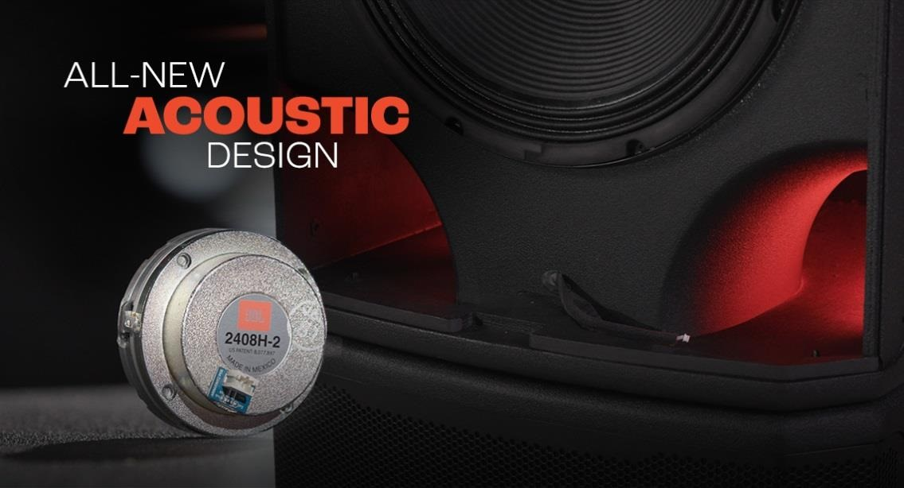
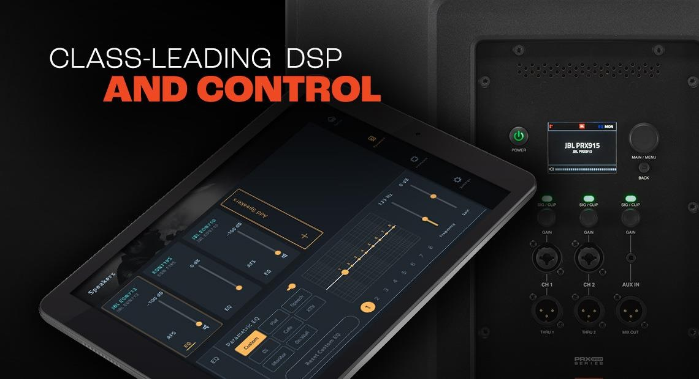
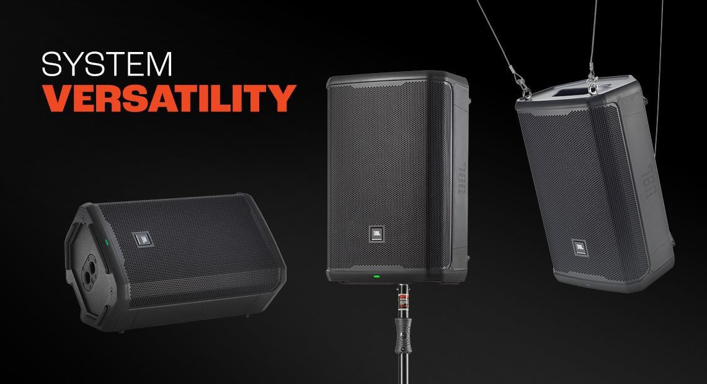
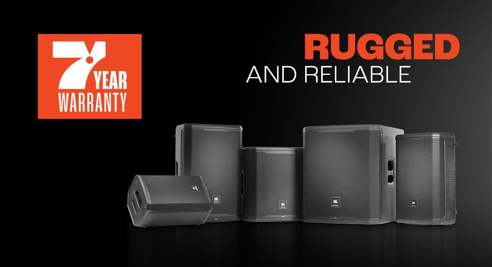
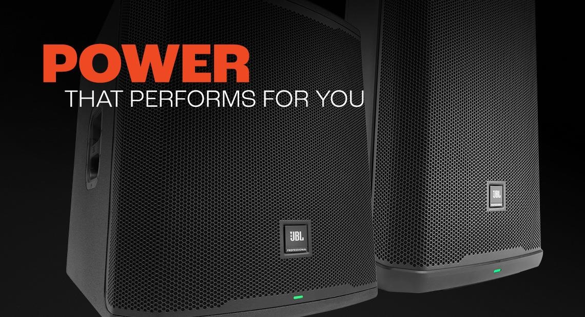
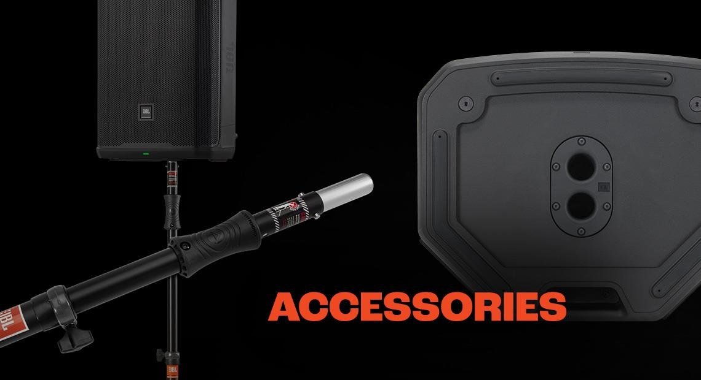

JBL PRX 900
ОКТЯБРЬ, 2022

Активные колонки и сабвуферы JBL серии PRX900 выводят профессиональные портативные акустические системы на новый уровень благодаря усовершенствованной акустике, комплексному DSP, непревзойденной мощности и долговечности, а также дистанционному управлению BLE через экосистему JBL Pro Connect. Линейка, которая включает в себя три активных 2-ух полосных колонок и два активных сабвуфера, была полностью построена с нуля, чтобы использовать самые передовые акустические инновации JBL. Совершенно новые запатентованные системы драйверов, оснащенные сверхэффективными усилителями D класса мощностью 2000 Вт (пиковая), обеспечивают чистоту и четкость звука при максимальной громкости, улучшенную дисперсию и плавное расширение низких частот. Серия PRX900 — это универсальное решение для ди-джеев и музыкальных групп, музыкальных площадок, арендных домов, корпоративных аудио/видео провайдеров или всех, кому нужны надежные профессиональные системы, обеспечивающие мощный, заполняющий помещение звук в любом портативном или стационарном применении.
Абсолютно новая акустическая конструкция
Серия PRX900 создавалась с нуля от диффузоров до корпусов, используя последние акустические инновации JBL. Запатентованные 1,5-дюймовые компрессионные драйверы JBL 2408H-2 с поликольцевыми диафрагмами и неодимовыми магнитами обеспечивают четкий и детальный отклик на высоких частотах даже при максимальной громкости. Высококачественные термисторы NTC защищают динамики, уменьшая мощность, подаваемую на них при приближении к тепловому пределу. Инновационные новые рупоры с обновленными волноводами JBL Image Control обеспечивают оптимальную ширину луча и направленность. Низкочастотные динамики нового поколения с ферритовыми магнитами обеспечивают естественное воспроизведение басов, а конструкция расширяющегося порта FEA снижает воздушный шум и искажения. Сабвуферы оснащены запатентованными звуковыми катушками для улучшения низкочастотного отклика. Все это обеспечивает чистый, точный и мощный звук на любой громкости.
Настройте свой звук с лучшим в своем классе DSP и управлением
Серия PRX900 оснащена комплексным DSP, доступным через приложение JBL Pro Connect и встроенный полноцветный ЖК-дисплей. Обработка включает 12-полосный параметрический EQ и оптимизированные системные пресеты; встроенная технология dbx DriveRack включает динамическое и фиксированное автоматическое подавление обратной связи, программные системные лимитеры и 180-мс задержку звука с интервалом в 100 микросекунд для мульти-систем с полной временной синхронизацией. Приложение JBL Pro Connect предлагает функции BLE для системного управления до 10 колонок и линейной интеграции с системами JBL EON ONE MK2, PRX ONE и EON700. Приложение предоставляет возможность изменять имена колонок и сигнализировать светодиодами всех устройств для упрощения идентификации колонок в полной мульти- системе. Доступ ко всем функциям DSP в любом месте прямо из приложения.
Универсальность и масштабируемость
В PRX900 серии можно комбинировать колонки и сабвуферы в различных конфигурациях, чтобы удовлетворить потребности как мобильных, так и стационарных установок. Колонки PRX900 имеют двойные 36-мм «стаканы» под стойку и шесть точек подвеса M10; сабвуферы оснащены резьбовыми «стаканами» M20 под стойку. Встроенный гироскоп G- Sensor автоматически переключает пресет системы в зависимости от мониторного положения или РА.
Надежность и транспортабельность для долгого пути
Компоненты PRX900 размещаются в прочных и легких корпусах, которые максимально увеличивают акустические характеристики и долговечность. Корпуса колонок изготовлены из полипропилена, оптимизированными по жесткости, смоделированным на компьютере внутренним ребристым дизайном, улучшающим прочность и акустические характеристики. Корпуса сабвуферов изготовлены из 18-мм фанеры с оптимизированными креплениями, сглаживающими низкочастотный отклик; корпуса для долговечности имеют покрытие Duraflex. Как и все продукты JBL, колонки и сабвуферы серии PRX900 проходят 100-часовые стресс- тесты всех компонентов, чтобы убедиться, что системы превосходят ожидания в реальных условиях. Они настолько надежны, что на каждую колонку распространяется беспрецедентная семилетняя гарантия.
Мощность, которая работает для вас
Большие помещения для живых выступлений требуют более высокой мощности и производительности для удовлетворения потребностей своих клиентов. Серия PRX900 обеспечивает акустическую чистоту и четкость с минимальной компрессией мощности даже при максимальной громкости, благодаря высокоэффективным усилителям D класса мощностью 2000 Вт (пиковая). Мостовой усилитель низкочастотного динамика удерживает пики и снижает гармоники перекрестных помех компрессионного драйвера, а источник питания с коррекцией коэффициента мощности (PFC) стабилизирует нагрузку по напряжению, подаваемую на усилитель. Высококачественные катушки индуктивности с высокой линейностью обеспечивают высокую энергоэффективность и низкий уровень общих гармонических искажений, а входное каскадирование с низким уровнем шума и искажений оптимизирует диапазон и запас для различных требований к усилению. Высококачественный ЦАП и АЦП обеспечивают преобразование звука практически без потерь. Системы без особых усилий озвучивают большие пространства с высокими требованиями к мощности и производительности, обеспечивая выходной уровень до 134 дБ на частоте до 30 Гц. И с полной полосой пропускания CMRR(коэффициент подавления синфазного сигнала) более 55 дБ и рейтингом THD(общее гармоническое искажение) 32 дБ.
Аксессуары, которые вам нужны
Ваша система PRX900 будет неполной без необходимых принадлежностей, включая универсальное подвесное крепление на скобе, транспортировочные сумки для колонок, а также надежные высококачественные монтажные стойки и штативы для быстрой и надежной установки. JBL предлагает прочные чехлы для колонок от Gator, а также различные стойки для колонок с системой пневматической и ручной регулировкой высоты, идеально подходящие для вашей системы PRX900 и обеспечивающие надежную основу для вашего следующего концерта, мероприятия или тура.
PRX908 SPECIFICATIONS
| Частотный диапазон (-10dB) | 67 Hz - 20 kHz (4π) |
| Частотный диапазон (-3 dB | 67 Hz - 20 kHz (4π) |
| Покрытие | 105° x 60° |
| Сопротивление динамиков | Номинальное: Динамик: 4 Ω Драйвер: 8 Ω |
| Max SPL | 126 dB |
| Номинальная мощность | 2000W peak / 1000W RMS |
| Охлаждение | Естественная конвекция Без вентилятора |
| Частота раздела | 1930 Hz |
| Вх/Вых | x2 Combo Вх. и x1 3.5 mm Stereo Jack x2 XLR Сквозной Вых. и x1 Mix Вых. |
| Подвеска/Крепление | 6x M10 Точка подвеса и крепление на стойку |
| Габариты (В x Ш x Г) | 479 x 312 x 285 мм |
| Вес | 13.7 кг |
PRX912 SPECIFICATIONS
| Частотный диапазон (-10dB) | 50 Hz - 20 kHz (4π) |
| Частотный диапазон (-3 dB | 65 Hz - 17 kHz (4π) |
| Покрытие | 90° x 50° |
| Сопротивление динамиков | Номинальное: Динамик: 4 Ω Драйвер: 8 Ω |
| Max SPL | 132 dB |
| Номинальная мощность | 2000W peak / 1000W RMS |
| Охлаждение | Естественная конвекция Без вентилятора |
| Частота раздела | 2050 Hz |
| Вх/Вых | x2 Combo Вх. и x1 3.5 mm Stereo Jack x2 XLR Сквозной Вых. и x1 Mix Вых. |
| Подвеска/Крепление | 6x M10 Точка подвеса и крепление на стойку |
| Габариты (В x Ш x Г) | 636 x 394 x 332 мм |
| Вес | 19.5 кг |
PRX915 SPECIFICATIONS
| Частотный диапазон (-10dB) | 48 Hz - 19 kHz (4π) |
| Частотный диапазон (-3 dB | 60 Hz - 16 kHz (4π) |
| Покрытие | 90° x 50° |
| Сопротивление динамиков | Номинальное: Динамик: 4 Ω Драйвер: 8 Ω |
| Max SPL | 133 dB |
| Номинальная мощность | 2000W peak / 1000W RMS |
| Охлаждение | Естественная конвекция Без вентилятора |
| Частота раздела | 1920 Hz |
| Вх/Вых | x2 Combo Вх. и x1 3.5 mm Stereo Jack x2 XLR Сквозной Вых. и x1 Mix Вых. |
| Подвеска/Крепление | 6x M10 Точка подвеса и крепление на стойку |
| Габариты (В x Ш x Г) | 717 x 465 x 383 мм |
| Вес | 24.1 кг |
PRX915XLF SPECIFICATIONS
| Частотный диапазон (-10dB) | 36 Hz - 98 Hz (2π) |
| Частотный диапазон (-3 dB | 40 Hz - 87 Hz (2π) |
| Направленность | Omni |
| Сопротивление динамиков | Номинальное: 4 Ω |
| Max SPL | 131 dB @ 1m/2π |
| Номинальная мощность | 2000W peak / 1000W RMS |
| Охлаждение | Естественная конвекция Без вентилятора |
| Частота раздела | 80 Hz, 100 Hz, 120 Hz, по выбору |
| Вх/Вых | x2 Combo Вх. x2 XLR Сквозной на Вых. |
| Подвеска/Крепление | Крепление под стойку на верхней поверхности |
| Габариты (В x Ш x Г) | 549 x 480 x 580 mm |
| Вес | 28.6 kg |
PRX918XLF SPECIFICATIONS
| Частотный диапазон (-10dB) | 30 Hz – 110 Hz (2π) |
| Частотный диапазон (-3 dB | 35 Hz – 92 Hz (2π) |
| Направленность | Omni |
| Сопротивление динамиков | Номинальное: 4 Ω |
| Max SPL | 134 dB @1m/2π |
| Номинальная мощность | 2000W peak / 1000W RMS |
| Охлаждение | Естественная конвекция Без вентилятора |
| Частота раздела | 80 Hz, 100 Hz, 120 Hz, по выбору |
| Вх/Вых | x2 Combo Вх. x2 XLR Сквозной на Вых |
| Подвеска/Крепление | Крепление под стойку на верхней поверхности |
| Габариты (В x Ш x Г) | 693 x 591 x 654 мм |
| Вес | 40.7 кг. |